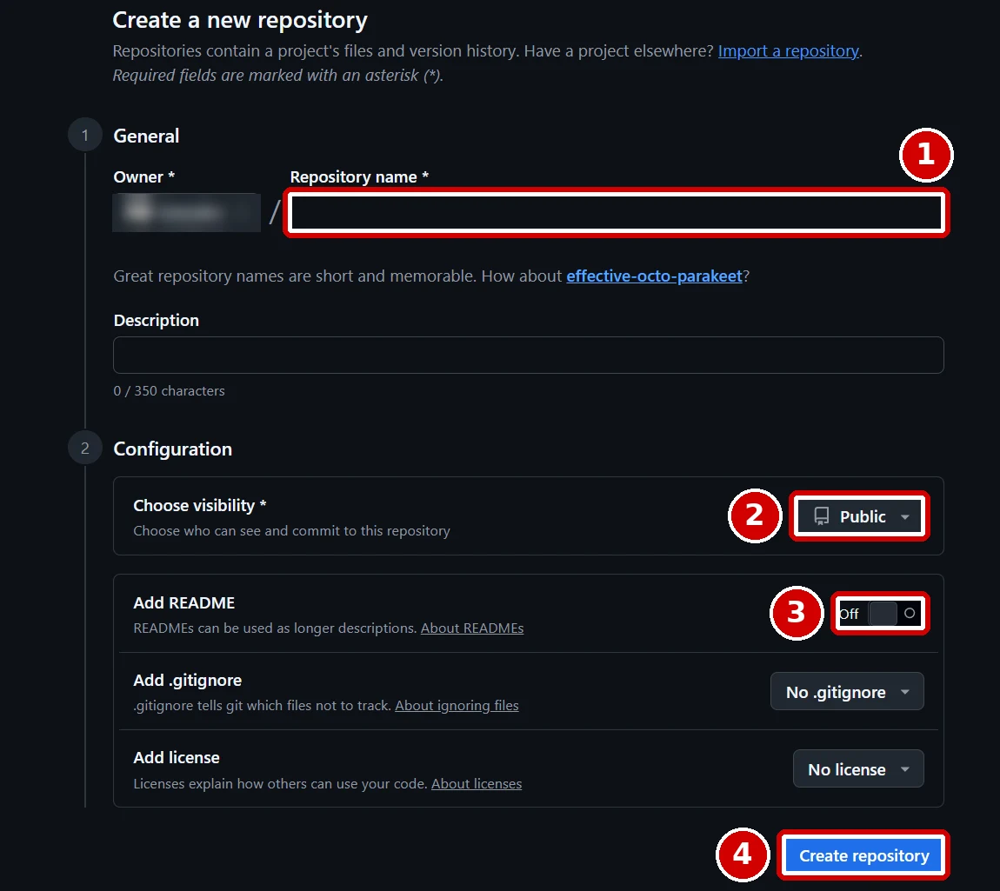
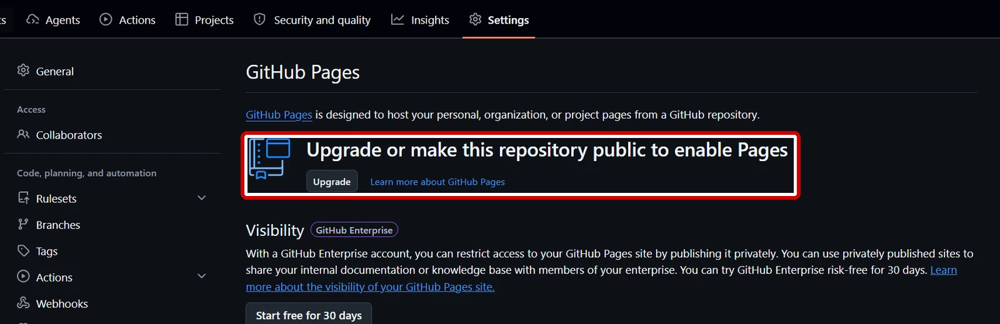
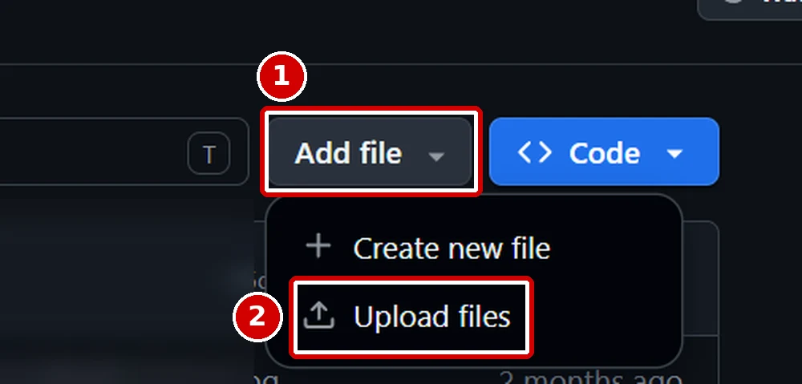
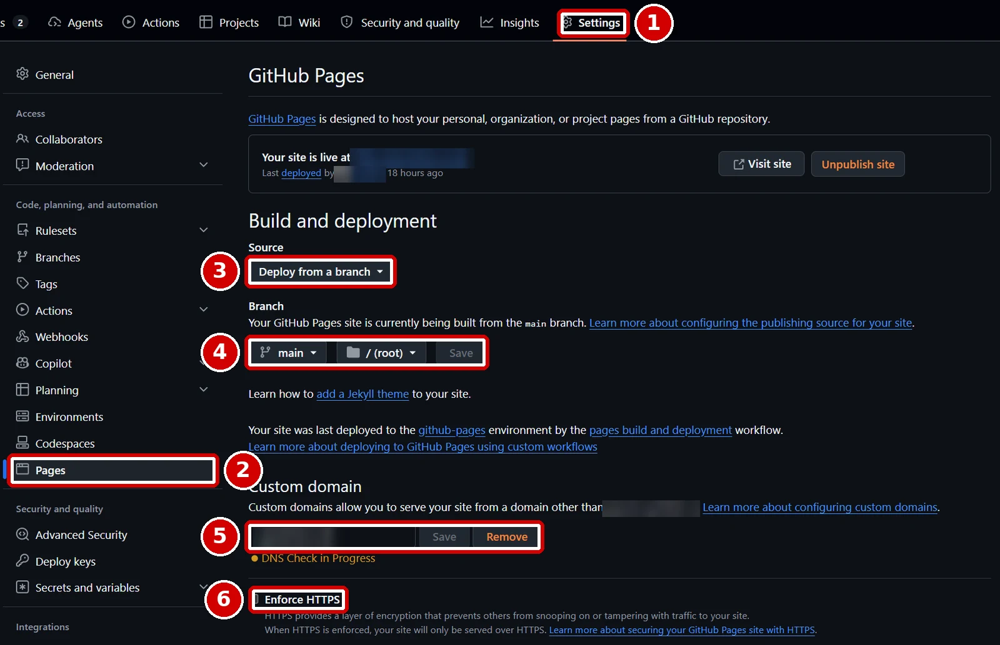
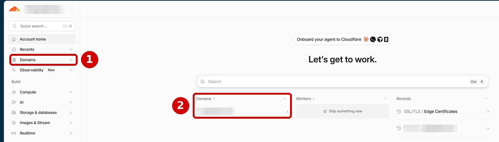
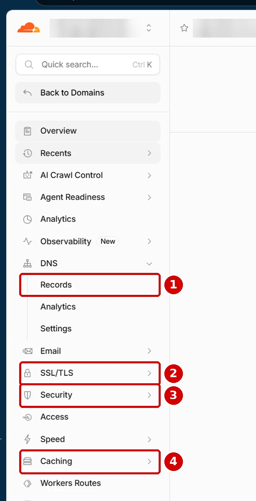
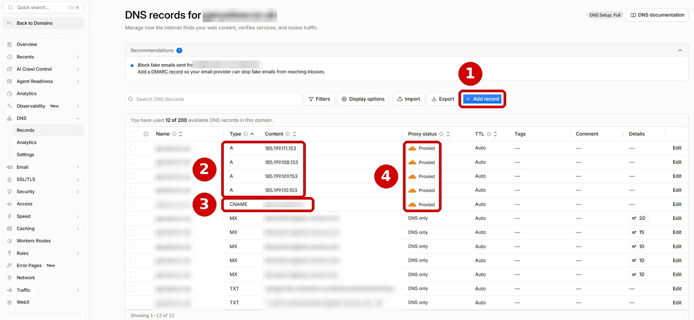
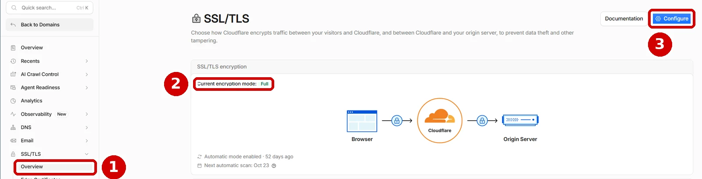
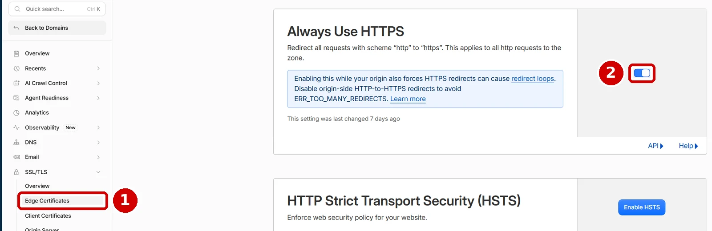
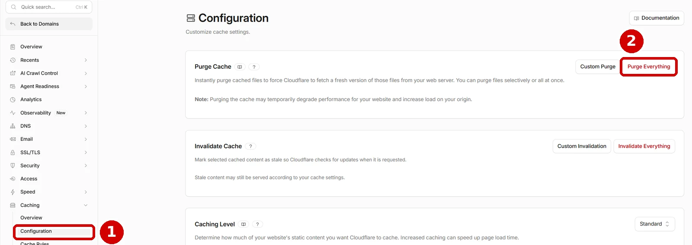

My own website runs on GitHub Pages with my domain pointed at it through Cloudflare, and the hosting costs me nothing. I have shown a lot of people that you can do this, including small business owners who now save on hosting fees, and even some experienced GitHub users didn't know it was possible. This guide walks through the whole setup in the order I would do it today. Every screenshot is from my own accounts, with my personal details blurred out, and the red boxes show you exactly where to click.
Who this guide is for
This is for anyone who wants a simple website, such as a portfolio, a personal brand site or a small business page, live on their own web address without paying for hosting. You don't need to be a developer, and you don't need to know any code, because I will show you how to get AI to write your first page. By the end you will have a website at your own address, served securely over HTTPS, with Cloudflare in front of it for speed and protection.
What you'll need
Get these four things ready before you start, because the steps assume you have them.
- A domain name, which is your web address, such as
yourname.co.uk. Step 1 covers buying one if you haven't yet. - A free GitHub account. Sign up at GitHub. GitHub is where your website files will live.
- A free Cloudflare account. Sign up at Cloudflare. Cloudflare will sit between your visitors and GitHub.
- About an hour, plus some waiting time. Address changes on the internet can take up to 24 hours to spread, although mine took far less.
Cost: nothing beyond the domain itself, which is usually a small yearly fee.
Why Cloudflare? You don't have to use it. GitHub Pages works on its own, and you can point your domain at GitHub from your domain seller's settings instead. I use Cloudflare because its free plan is easy to set up, it keeps copies of your pages close to your visitors so the site loads faster, it adds a layer of protection, and it gives you one clear place to manage your domain's settings. It has worked well for me, so it is the route this guide follows.
Step 1: Buy your domain name
- Choose a domain seller, called a registrar. Well known options include Cloudflare Registrar, which sells domains at cost, and any of the big high street names. Any registrar works for this guide.
- Search for the name you want, add it to your basket and buy it. You don't need any of the extras the seller offers, such as hosting, a website builder or email packages, because GitHub and Cloudflare cover what you need for free.
- Keep the login for your registrar handy, because in Step 6 you will change one setting there.
If you buy your domain from Cloudflare Registrar, it is already set up in Cloudflare, so you can skip the nameserver part of Step 6.
Step 2: Create your first page with AI
Every website needs a file called index.html. It is the home page: when someone types your address, their browser looks for this file and opens it first. The .html part means it is written in HTML, the language web pages are built from. You don't need to learn HTML to get started, because an AI assistant can write the file for you.
- Open an AI assistant such as Claude, Copilot or ChatGPT, and paste in the prompt below, changing the details in the square brackets to your own.
- Open Notepad on your PC, paste in everything the AI gives you between
<!DOCTYPE html>and</html>, and click File, then Save as. - In the Save as type box, choose All files, type
index.htmlas the file name, and click Save. If you leave the type as Text documents, Windows saves it asindex.html.txt, and GitHub won't treat it as a web page.
Create a single, self-contained index.html file for a simple one-page website.
It is for [your name or business], who [what you do, in one sentence].
Include: a heading with the name, a short introduction, a section on [services, projects or experience], and a contact section with [email address or a link].
Put all the styling inside the file in a <style> block, so there are no other files to upload.
Use large, readable text, strong contrast between text and background, and make it work well on mobile phones.
Give me only the finished code, from <!DOCTYPE html> to </html>.What you should see: double click your saved index.html file and it opens in your web browser, looking like a finished page. If it does, you have a website. It just isn't on the internet yet.
Step 3: Create your GitHub repository
A repository is GitHub's name for a project folder. Yours will hold your website files.
- Sign in to GitHub and go to create a new repository. You can also get there from the + button in the top right corner of any GitHub page, then New repository.
- In the box marked 1 below, Repository name, type
yourusername.github.io, replacingyourusernamewith your own GitHub username in lower case. This exact name tells GitHub it is your main website. - In box 2, make sure Choose visibility is set to Public.
- In box 3, click the Add README switch so it shows On.
- Click Create repository, shown in box 4.

The repository has to be public on GitHub's free plan. I learned this when I tried to switch on Pages for one of my private repositories, and GitHub showed the message in the red box below instead of the Pages settings. A public repository means anyone can see your website's files, which is fine, because they can see your website anyway. Just never put passwords or private documents in it.

Step 4: Upload your index.html file
- In your new repository, click the Add file button, marked 1 below, then click Upload files, marked 2.
- Drag your
index.htmlfile from your PC onto the upload page. It must sit at the top level of the repository, not inside a folder. - Scroll down and click the green Commit changes button. Commit is GitHub's word for save.

What you should see: your repository's main page now lists index.html alongside README.md.
Step 5: Switch on GitHub Pages
Follow the numbers on the screenshot below.
- Click Settings along the top of your repository, marked 1.
- Click Pages in the left-hand menu, marked 2.
- Under Build and deployment, open the Source dropdown, marked 3, and choose Deploy from a branch.
- In the branch dropdowns, marked 4, choose
mainand leave the folder as / (root), then click Save.

What you should see: within about 10 minutes, a box appears at the top of this page saying your site is live, with a Visit site button. Click it, and your page opens at yourusername.github.io. If you see a "page not found" message instead, give it a few more minutes before changing anything. Boxes 5 and 6 are for Step 8, so leave them for now.
Step 6: Add your domain to Cloudflare
- Sign in to Cloudflare's dashboard and click Domains in the left-hand menu, marked 1 below. Box 2 shows where your domains are listed once they are added.
- Click Onboard a domain, type your domain without the www, such as
yourname.co.uk, and click Continue. - Choose the Free plan.
- Cloudflare scans for any existing records for your domain and shows them in a list. Delete any old records that point your main domain at another website or a parking page, because they will clash with GitHub's, then click Continue.
- Cloudflare gives you two nameservers, which look like two web addresses ending in
ns.cloudflare.com. Sign in to your registrar, find the nameserver settings for your domain, replace the existing ones with Cloudflare's two, and save.

What you should see: Cloudflare emails you when your domain is active. Until then, the domain shows as pending in your Cloudflare dashboard.
Once your domain is active, click it to open its own menu. You will use four parts of this menu in the rest of the guide, so here they are in one place.

Step 7: Point your domain at GitHub
These records are the signposts that send your visitors to GitHub. GitHub publishes the addresses below in its own documentation, and they are the same for everyone, which is why I have left them visible in my screenshot.
- In your domain's menu in Cloudflare, click DNS, then Records.
- Click Add record, marked 1 below.
- Set Type to A, Name to
@(which means your main domain), and IPv4 address to185.199.108.153. Leave the orange cloud switched on, and click Save. - Repeat for the other three addresses, one record each:
185.199.109.153,185.199.110.153and185.199.111.153. Box 2 shows my four A records. - Click Add record again. Set Type to CNAME, Name to
www, and Target toyourusername.github.io, with nothing after it. Click Save. Box 3 shows mine. - Check the Proxy status column, box 4. Each of these records should show an orange cloud and the word Proxied, which means visitors go through Cloudflare first.

Don't add a wildcard record, such as *.yourname.co.uk. GitHub warns that wildcard records can let someone else take over parts of your domain.
Do you need the IPv6 records? GitHub's documentation also lists four AAAA records. These are for IPv6, which is the newer style of internet address. You can skip them when you use Cloudflare, because Cloudflare's IPv6 compatibility is switched on by default and answers IPv6 visitors for you. If you are not using Cloudflare, add them at your registrar as GitHub's page shows.
Step 8: Tell GitHub about your domain
- Back in GitHub, go to your repository's Settings, then Pages, as in Step 5.
- In the Custom domain box, marked 5 on the Step 5 screenshot, type your domain, such as
yourname.co.uk, and click Save. GitHub adds a file calledCNAMEto your repository, which is how it remembers your domain, so never delete that file. - You will see DNS Check in Progress under the box. Wait for it to pass.
- Tick Enforce HTTPS, marked 6. GitHub says this option can take up to 24 hours to become available after your records are in place.
What you should see: typing your domain into a browser loads your website. If you want to check the records yourself on Windows, follow these steps:
- Press the Windows key, type
PowerShell, and press Enter to open it. - Type the command below, replacing
yourname.co.ukwith your own domain, and press Enter.
Resolve-DnsName yourname.co.ukYou will see a short table of results. With the orange cloud on, the addresses listed belong to Cloudflare, not GitHub, which is exactly right, because your visitors now reach Cloudflare first.
Step 9: Set Cloudflare's encryption mode to Full
Encryption keeps the connection between your visitors and your site private. Cloudflare has to know how to talk securely to GitHub too.
- In your domain's menu in Cloudflare, click SSL/TLS, then Overview, marked 1 below.
- Look at Current encryption mode, marked 2. If it already says Full, as mine does, you are done.
- If it says anything else, click Configure, marked 3, choose the custom option, select Full, and save. GitHub Pages serves your site over HTTPS, so Cloudflare can talk to it securely, and Cloudflare recommends Full or Full (strict) over Flexible wherever possible.

Step 10: Switch on Always Use HTTPS
This setting cost me search visibility for weeks before a free Ahrefs site audit showed me what was going on. Without it, my whole site existed twice, once on plain http and once on secure https. The audit crawled 39 http pages alongside 43 https ones, and search engines had to work out which copy was the real one.
- In your domain's menu, click SSL/TLS, then Edge Certificates, marked 1 below.
- Find Always Use HTTPS and click its switch, marked 2, so it turns blue.

What you should see: type your domain into your phone's browser with plain http in front of it, and it jumps straight to the secure https version, with the padlock showing.
Step 11: Stop Cloudflare hiding your email links
Cloudflare switches on a feature called Email Address Obfuscation automatically when you sign up. It hides email addresses on your pages from spam bots by swapping each one for a special link. The catch is that SEO tools see that special link as a broken page. In my audit, 36 of the 37 "broken links" were this one feature, repeated on every page that had my email address on it.
You only need this step if your site shows an email address. The fix I use doesn't involve hunting through Cloudflare's settings at all. Cloudflare leaves alone anything you wrap in two special markers, <!--email_off--> before and <!--/email_off--> after, so I put those around every email link on my site. My audit's broken links dropped to zero, and the email links still work normally.
- Open your
index.htmlfile in Notepad. - Press Ctrl and F together, type
mailto:and press Enter to find your email link. - Type
<!--email_off-->directly before the<aat the start of that link, and<!--/email_off-->directly after the</a>at the end of it. It should look like the second line below, with your own address. - Repeat for every email link, save the file, and upload it to GitHub again as in Step 4.
<a href="mailto:YOUR-EMAIL-ADDRESS">Email me</a>
<!--email_off--><a href="mailto:YOUR-EMAIL-ADDRESS">Email me</a><!--/email_off-->If you have several pages, paste this prompt into your AI assistant with the files attached:
I have attached the HTML files for my website. Cloudflare's Email Address Obfuscation is turning my email links into links that SEO tools report as broken.
In every file, find each link that starts with <a href="mailto: and wrap the whole link, from <a to </a>, in Cloudflare's markers: put <!--email_off--> directly before it and <!--/email_off--> directly after it.
Don't add the markers twice if a link already has them, and change nothing else. Give me back each full file.What you should see: open your live page, right click and choose View page source, then press Ctrl and F and search for email-protection, and it should find nothing.
Cloudflare's documentation also describes a switch to turn the feature off for the whole site, under Security, then Settings. When I typed its name into the dashboard's search bar it found nothing, which is exactly why I use the markers instead: they work whatever the dashboard looks like.
Step 12: Make your updates show up straight away
Cloudflare keeps copies of your files so the site loads faster. That is great until you change something. When I updated my site's design, visitors kept getting the old stylesheet, and the pages looked broken.
- The quick fix: after any big change, go to your domain's menu, click Caching, then Configuration, marked 1 below, and click Purge Everything, marked 2. Cloudflare throws away its copies and fetches your new files.
- The lasting fix: if your site uses a separate stylesheet file, add a version number to the link that loads it, and change the number whenever the stylesheet changes. A new address makes Cloudflare fetch the new file.

If you built your page with the prompt in Step 2, the styling lives inside index.html, so a purge is all you need. Once your site grows to several pages sharing one stylesheet, each page has a line like the first one below in its <head> section. Change it to the second, and next time change v=2 to v=3:
<link rel="stylesheet" href="/css/style.css">
<link rel="stylesheet" href="/css/style.css?v=2">With lots of pages, let AI make the change for you. Paste this prompt into your assistant along with your files:
I have attached the HTML files for my website. Each one loads the same stylesheet.
Add a version number to every stylesheet link, so href="/css/style.css" becomes href="/css/style.css?v=2".
If a link already has a version number, increase it by one.
Change nothing else in the files, and give me back each full file.My site's publishing script now does this automatically every time the stylesheet changes.
If it goes wrong
- GitHub shows a "page not found" message on your own domain. Check that
index.htmlis at the top level of your repository, not inside a folder, and that it isn't calledindex.html.txt. Check theCNAMEfile still exists. Re-saving your domain under Settings, then Pages recreates it. - "Enforce HTTPS" is greyed out. GitHub needs to see your domain pointing at its addresses before it can issue a certificate, so give it time first. If it stays greyed out, a common workaround is to temporarily switch the records in Cloudflare to DNS only (the grey cloud), wait for GitHub to issue the certificate and tick the box, then switch the orange cloud back on.
- The browser says "too many redirects". This usually means Cloudflare is set to Flexible while HTTPS is enforced at GitHub, so the two keep redirecting each other. Set the mode to Full as in Step 9.
- Your changes don't appear. Wait up to 10 minutes for GitHub to publish, then purge Cloudflare's cache as in Step 12.
- Your domain still shows an old website or a parking page. An old record is still pointing somewhere else. Delete any A or CNAME records for
@orwwwthat aren't the ones from Step 7, and check your registrar is using Cloudflare's two nameservers.
Stuck? Copy this prompt into an AI assistant
If something isn't working and the list above doesn't fix it, paste this prompt into Claude, Copilot or ChatGPT. Fill in the square brackets, and attach a screenshot of the page you are stuck on, with any personal details covered.
I am following a step-by-step guide to host a free website on GitHub Pages with my own domain, using Cloudflare for DNS.
I am a beginner, so please explain each fix in simple numbered steps and tell me exactly where to click.
Where I am stuck: [which step, for example "Step 8, Enforce HTTPS is greyed out"].
What I expected to see: [for example "my website at my domain"].
What I actually see: [the exact error message or what the page shows].
My setup: repository named [yourusername.github.io], domain [yourname.co.uk], DNS records in Cloudflare: [list the Type, Name and Content of each record, or attach a screenshot].
What I have already tried: [anything you have changed].
Ask me questions if you need more information before suggesting a fix.Where to go next
Once the site is live, tell search engines it exists. My free tools guide, getting a small website ready for AI search, covers Search Console, Bing Webmaster Tools and the basics that help a new site get found. If you want to compare the free analytics options, read Clarity vs GA4 vs Bing Webmaster Tools.
Sources
- GitHub Docs: Creating a GitHub Pages site
- GitHub Docs: Configuring a publishing source
- GitHub Docs: Managing a custom domain for your GitHub Pages site
- Cloudflare Docs: Add a site
- Cloudflare Docs: IPv6 compatibility
- Cloudflare Docs: Encryption modes
- Cloudflare Docs: Always Use HTTPS
- Cloudflare Docs: Email Address Obfuscation